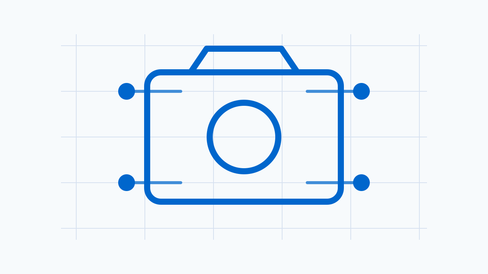

Camera SWNewsletter - 2026-09-28
이번 주 뉴스레터는 Android Studio의 AI 에이전트 통합 및 Claude Opus 5.5 출시 등 개발 생산성을 높이는 도구 소식과 함께, 르네사스 RZ/V2H EVK의 ISP 활성화, 삼성 S5K3T2 및 소니 IMX681 이미지 센서 드라이버 패치 제안 등 하위 이미지 파이프라인 스택의 주요 변화를 다룹니다.
이번 주 3줄 브리핑
- Android Studio의 AI 에이전트 통합 및 Claude Opus 5.5 출시로 네이티브 카메라 스택 개발 워크플로우의 효율성 향상 기회가 마련되었습니다.
- 르네사스 RZ/V2H EVK 플랫폼에서 Mali-C55 ISP 및 IVC 노드를 활성화하는 DTS 패치가 제안되어 하위 이미지 파이프라인 제어 기반이 강화되었습니다.
- 삼성 S5K3T2 및 소니 IMX681 이미지 센서의 리눅스 커널 드라이버 패치와 최신 libcamera 환경에서의 테스트 결과가 공유되어 신규 센서 통합의 안정성을 높였습니다.
Android Studio, 개발자 맞춤형 AI 에이전트 연동 지원으로 네이티브 개발 유연성 확장
Android Developers Blog (2026-09-24)

Android Studio가 개발자가 선택한 임의의 AI 에이전트를 통합할 수 있는 개방형 환경을 제공하며 네이티브 개발 워크플로우의 변화를 예고했습니다.
AI 에이전트 연동을 통한 개발 환경의 개방성 확보
구글은 최근 안드로이드 스튜디오에서 개발자가 원하는 AI 에이전트를 자유롭게 선택하고 통합하여 사용할 수 있는 새로운 기능을 발표했습니다. 이는 개발팀이 자체적으로 구축한 맞춤형 엔터프라이즈 하네스나 특화된 AI 코딩 에이전트, 그리고 자율 도구들을 안드로이드 스튜디오 내에 유연하게 결합할 수 있도록 돕습니다.
카메라 및 드라이버 개발 분야에서 이 기능은 복잡한 네이티브 코드 베이스의 탐색과 디버깅 속도를 높이는 도구로 활용될 수 있습니다. 특히 빌드 시스템이나 정적 분석 도구와의 연동을 통해 개발 생산성을 높이는 승수 역할을 할 것으로 기대됩니다.
네이티브 개발 워크플로우의 최적화
이 변화는 안드로이드 카메라 런타임이나 HAL의 직접적인 동작 변경을 의미하지는 않습니다. 대신 Clang 및 LLVM 기반의 안드로이드 네이티브 툴체인을 다루는 엔터프라이즈 환경에서 빌드 스크립트 작성이나 테스트 케이스 생성 같은 반복 작업을 자동화하는 데 초점이 맞춰져 있습니다.
따라서 개발팀은 이 도구를 활용해 카메라 서비스나 드라이버 코드의 아키텍처를 분석하고, 복잡한 바인더 통신이나 메모리 관리 로직의 테스트 시나리오를 설계할 때 도움을 받을 수 있습니다.
직접적인 HAL 계약 변경은 없으나, LLVM Clang 툴체인 기반의 네이티브 카메라 서비스 및 드라이버 코드 분석 시 맞춤형 AI 에이전트를 연동하여 정적 분석 및 단위 테스트 케이스 생성을 자동화할 수 있습니다.
앤트로픽, 정렬 테스트를 통과한 고성능 AI 모델 Claude Opus 5.5 공개
Anthropic News (2026-09-22)

앤트로픽이 자사 모델 중 가장 강력한 성능을 자랑하며 강화된 안전 장치를 탑재한 Claude Opus 5.5를 선보였습니다.
고성능 모델의 등장과 개발 생산성 변화
앤트로픽은 최근 새로운 Claude 5.5 제품군의 첫 번째 모델인 Claude Opus 5.5를 발표했습니다. 이 모델은 포괄적인 정렬 테스트를 통과하며 높은 안전성을 입증했으며, 이전 세대인 Opus 5 대비 실행 비용을 약 40% 절감한 것이 특징입니다.
테스트 과정에서 단일 프롬프트로 게임을 제작하는 과제를 수행했을 때, 다른 모델 대비 그래픽 완성도와 세부 묘사에서 가장 높은 점수를 기록했습니다. 이러한 고성능 코드 생성 및 분석 능력은 네이티브 시스템 소프트웨어를 다루는 엔터프라이즈 환경에서도 유용하게 활용될 수 있습니다.
네이티브 시스템 개발에서의 간접적 활용
이 모델의 출시는 안드로이드 카메라 프레임워크나 HAL 런타임에 직접적인 기능 변화를 가져오지 않습니다. 대신 복잡한 C++ 코드의 리팩토링, 메모리 누수 분석, 그리고 드라이버 스택의 문서화 작업 등에서 개발자들을 지원하는 간접적인 도구로 기능합니다.
특히 카메라 드라이버나 ISP 파이프라인처럼 하드웨어 제어와 실시간 성능이 중요한 영역에서, 복잡한 V4L2 인터페이스나 미디어 컨트롤러 구조를 분석하고 테스트 시나리오를 도출하는 데 유용하게 쓰일 수 있습니다.
직접적인 HAL 런타임 영향은 없으나, C++ 기반의 Camera HAL 및 드라이버 소스 코드 분석, 메모리 세니타이저 로그 해석, V4L2 subdev 제어 로직의 정적 검증 시 고성능 AI 모델을 보조 도구로 활용할 수 있습니다.
르네사스 RZ/V2H EVK, 리눅스 커널 패치로 Mali-C55 ISP 및 IVC 하드웨어 활성화 추진
lore.kernel.org linux-media list (2026-09-25)

르네사스 RZ/V2H EVK 플랫폼에서 이미지 신호 프로세서와 비디오 코덱 노드를 활성화하기 위한 디바이스 트리 패치가 제안되었습니다.
디바이스 트리를 통한 하드웨어 노드 추가
리눅스 미디어 메일링 리스트에 르네사스 RZ/V2H EVK 평가 보드에서 Arm Mali-C55 ISP 및 IVC 하드웨어 블록을 활성화하는 디바이스 트리 소스 패치 시리즈가 제출되었습니다. 이 패치는 아직 메인라인 커널에 머지되지 않은 제안 상태의 변경 사항입니다.
제안된 패치는 선택적인 ISP DMA 라인 틱 인터럽트와 IVC 프레임 시작 및 정지 인터럽트를 정의하고 있습니다. 또한 RZ/V2H IVC 및 Arm Mali-C55 ISP 노드를 추가하여 비디오 엔드포인트를 상호 연결하는 작업을 포함합니다.
드라이버 활성화 및 콘솔 확인
이 패치를 적용하고 적절한 리눅스 드라이버를 활성화하면, 시스템 부팅 시 콘솔에서 Mali-C55 ISP 하드웨어가 정상적으로 감지되었다는 메시지를 확인할 수 있게 됩니다. 이는 하위 커널 레벨에서 이미지 파이프라인의 물리적 제어 기반이 마련됨을 뜻합니다.
카메라 드라이버 및 HAL 개발자 관점에서 이 변경은 하드웨어 파이프라인의 전력 소비와 이미지 처리 성능에 영향을 미치는 시작점입니다. 다만 이 패치는 특정 평가 보드용 DTS 변경에 국한되므로, 안드로이드 카메라 프레임워크나 HAL API 자체의 계약을 직접 변경하지는 않습니다.
RZ/V2H EVK 플랫폼 기반 개발 시, Mali-C55 ISP 및 IVC 노드가 활성화됨에 따라 V4L2 subdev 인터페이스를 통한 이미지 포맷 협상, 프레임 타이밍 검증, DMA 버퍼 라이프사이클을 하위 스택에서 점검해야 합니다.
소니 IMX681 카메라 센서 지원 패치 및 최신 libcamera 기반 통합 테스트 보고
lore.kernel.org linux-media list (2026-09-26)

소니 IMX681 카메라 센서 지원을 추가하는 패치 시리즈와 함께, 최신 libcamera 및 mesa 환경에서의 컴파일 및 검증 결과가 공유되었습니다.
최신 사용자 공간 라이브러리와의 연동 검증
리눅스 미디어 메일링 리스트에 소니 IMX681 카메라 센서 지원 패치 시리즈 v7에 대한 테스트 보고서가 제출되었습니다. 이 테스트는 커널 7.3-rc4 버전을 제외하고 안정 채널에서 사용 가능한 최신 버전의 구성 요소들을 사용하여 수행되었습니다.
검증 환경에는 mesa 3:26.2.3-1 및 libcamera 0.7.2-4.1 버전이 사용되었습니다. 특정 클라이언트 정보 구조체 관련 코드를 삭제하는 필수 패치를 적용한 후, 커널이 정상적으로 컴파일되었으며 카메라 센서에 대한 철저한 조사가 완료되었습니다.
이미지 파이프라인 안정성 확보
새로운 센서 지원과 libcamera 및 mesa 환경에서의 통합 테스트는 카메라 드라이버 스택의 안정성을 확보하는 데 중요한 이정표입니다. 이는 하위 드라이버의 변경이 상위 사용자 공간 라이브러리 및 이미지 파이프라인 검증 도구들과 조화롭게 동작함을 입증합니다.
카메라 개발자들은 이러한 검증 결과를 바탕으로, 향후 안드로이드 환경에서 libcamera 기반의 파이프라인 핸들러나 V4L2 호환 레이어를 통해 IMX681 센서를 통합할 때 발생할 수 있는 빌드 오류나 런타임 호환성 문제를 사전에 예방할 수 있습니다. 이 패치 역시 아직 머지되지 않은 제안 상태입니다.
IMX681 센서 통합 시, libcamera 0.7.2-4.1 및 mesa 최신 버전 환경에서의 컴파일 성공 사례를 참고하여, HAL3 구현체와의 프레임 버퍼 큐잉 및 포맷 협상 시 발생할 수 있는 호환성 이슈를 점검해야 합니다.